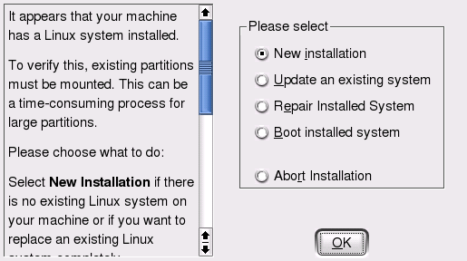
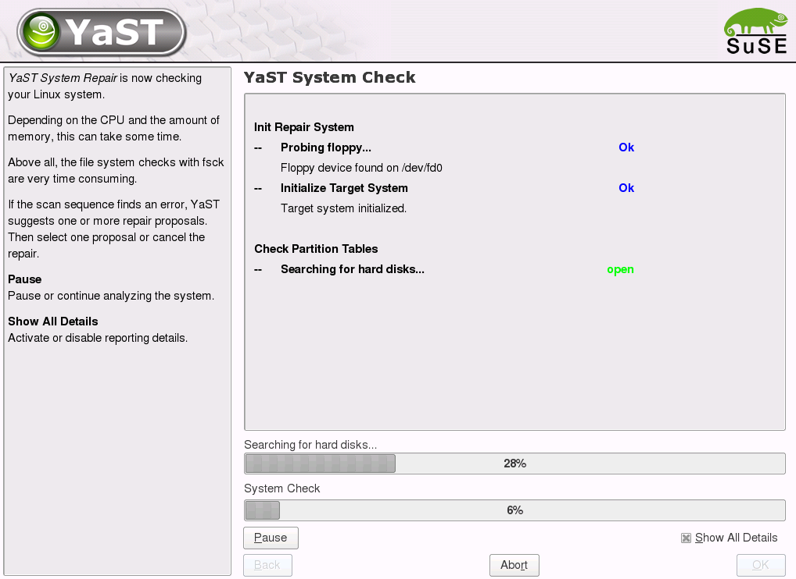
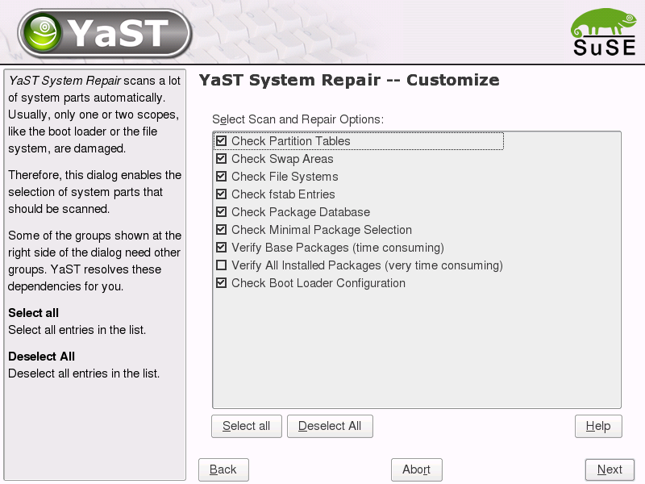
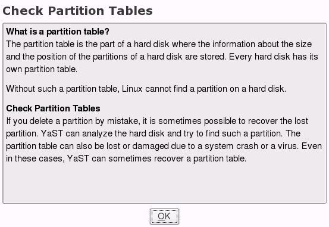
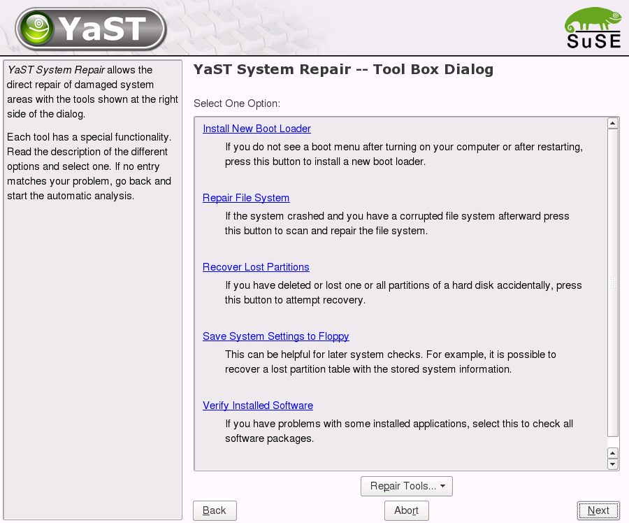

It can be used in the situations when system is not bootable, some important packages are missing (and thus preventing system to work) or when the file system is damaged.

YaST Repair Module provides many functions for scanning the system and for
repairing the damaged parts.
The tool first checks the specified part of the system, and if it finds an
error, it is reported
to the user. In this message YaST Repair Module suggests one or more
repair methods or lets the user cancel the repair process.
Nothing will be repaired automatically. Only if the user accepts the repair proposal the functions which could modify the system will be started.
Partition tables
If you delete a partition by mistake, it is sometimes possible to recover the lost partition. YaST Repair Module can analyze the hard disk and try to find such a partition. The partition table can also be lost or damaged due to a system crash or a virus. Even in these cases it could be possible to recover the partition table.
Swap areas
YaST Repair Module checks all found swap areas. If a swap area is damaged, the repair system proposes creating a new swap area.
File systems
An inconsistent file system occurs when a partition is not correctly unmounted.
For example, this happens when the system crashes.
There is a repair method for each file system. For example, if the file system
of the damaged partition is ext2 or ext3, use fsck.ext2 with the
corresponding options to repair the file system.
YaST Repair Module checks the file system of all found partitions and suggests
repairing it if an error was found using mentioned repair tools.
/etc/fstab entries
Repair tool checks all entries listed in the /etc/fstab and reports missing, obsolete, and erroneous entries.
Package database
YaST Repair Module checks all files that belong to the package database.
If some files are missing or the package database cannot be opened, Repair tool
allows rebuilding the database or reverting to a backup.
YaST Repair Module can check if all packages of a Minimal Selection are
installed. If some packages are missing, the missing packages are proposed to
install.
YaST Repair Module can also verify all package belonging to the Minimal
Selection. If some discrepancies appear, the damaged packages can be
reinstalled.
Bootloader configuration
YaST Repair Module tries to detect the installed boot loader. Afterwards, the configuration files of the boot loader will be checked. If boot loader is missing or an error in the configuration is detected, you have the possibility to install a new boot loader.
This dialog is shown whe the YaST Repair Module is started. User can choose
from tree types of repair mode.


Help Popup
Each check function listed in Customize Dialog has a description, which could be shown in a help window:

